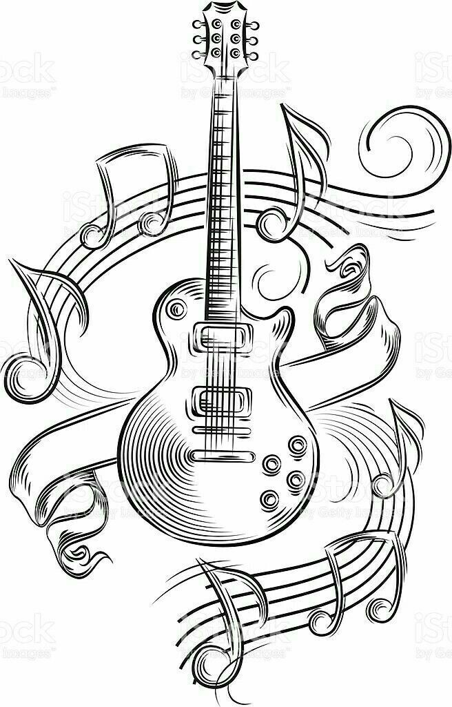
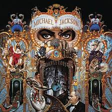

Veja os 12 albums com mais copias vendidas do mundo!
contendo artistas e ano de lançamento
inicio
outros topícos
menu
contendo artistas e ano de lançamento


30 milhões de copias vendidas
32 milhões de copias vendidas
32 milhões de copias vendidas
40 milhões de copias vendidas
40 milhões de copias vendidas
40 milhões de copias vendidas
40 milhões de copias vendidas
40 milhões de copias vendidas
45 milhões de copias vendidas
47 milhões de copias vendidas
50 milhões de copias vendidas
50 milhões de copias vendidas
70 milhões de copias vendidas